No posts match that yet. Try a different word.
2026

May 2026
The robot was fine. The internet wasn't. A cloud LLM that hung fifteen seconds on bad Faire WiFi, the fifty-line fix, and the power-save bug that looked like a crash loop.

April 2026
Meet Ring-O, the Pi-powered companion that gives Omnibot eyes, a brain, and a soul. Debugging YOLO11, ditching the LLM for math, and shipping to Maker Faire Miami 2026.

March 2026
Sculpting a banana handset, painting the phone yellow, and dyeing the cord for its home at Peel in Miami.

March 2026
Watchdog timers, crash recovery, and hiding Poemafone at 777-FILM for the O, Miami Poetry Festival.

March 2026
A $3 MP3 module, a broken is_playing() function, and the hardware pin that saved the project.

March 2026
Brute-forcing a salvaged phone keypad's pin matrix and taming a bouncy bottom row for O, Miami.

January 2026
Giving the Omnibot eyes and a brain. Pi 5, an AI camera, and a cloud LLM that decides what to do next.
January 2026
Bluetooth control via cassette adapter, web-based controller, and giving an 80s robot a modern voice.
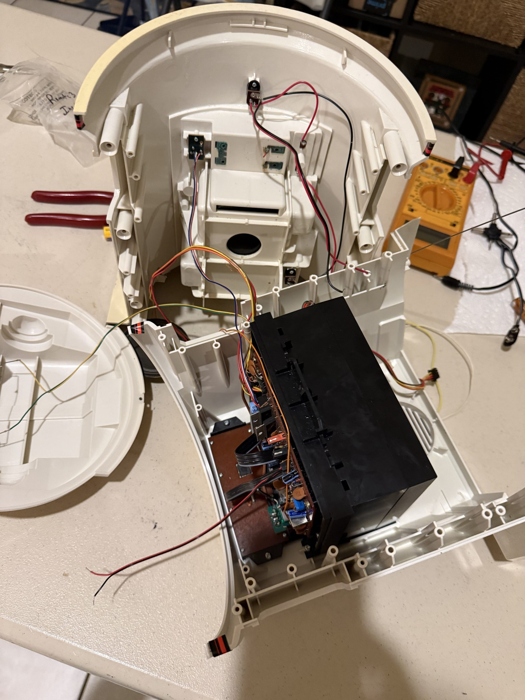
January 2026
Opening up a 40-year-old robot. Teardown, inspection, and first drive test.
2025
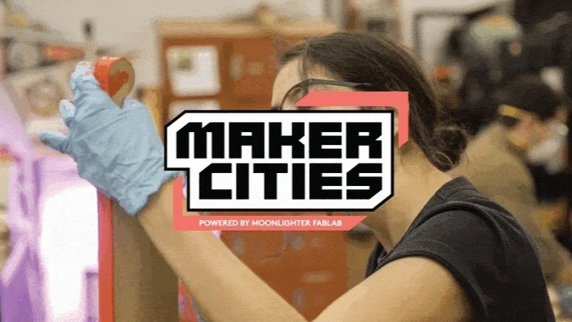
November 2025
Introducing Maker Cities, an NSF-funded program preparing adults for future careers through hands-on maker training.
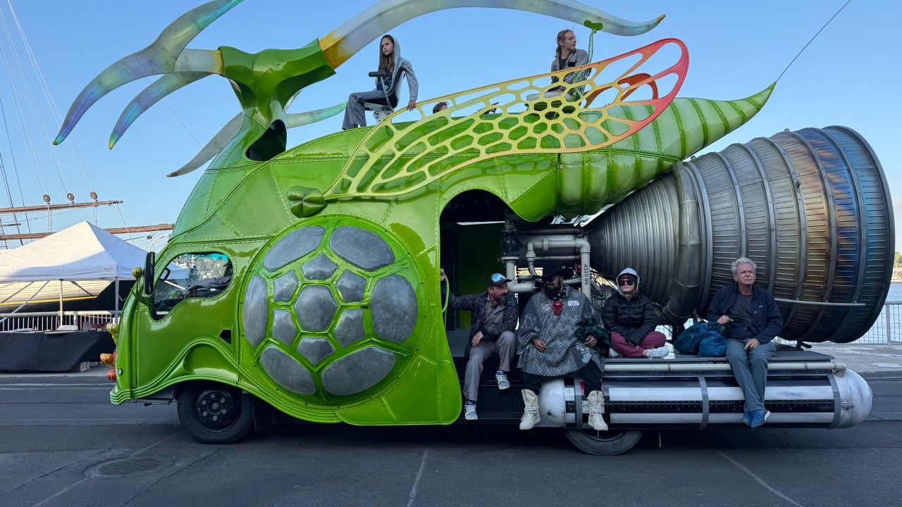
October 2025
Hosting the Make: Live Stage, supporting 7,500 students, and awarding Blue Ribbons to standout makers.
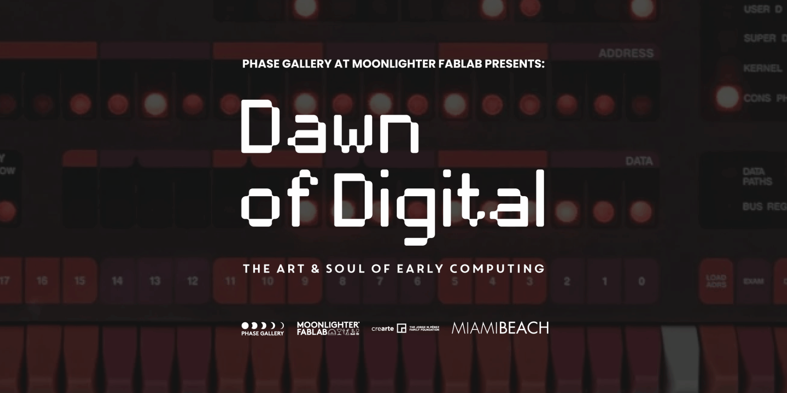
October 2025
An exhibit of vintage personal computers from my collection, on view October 2025 through February 2026.
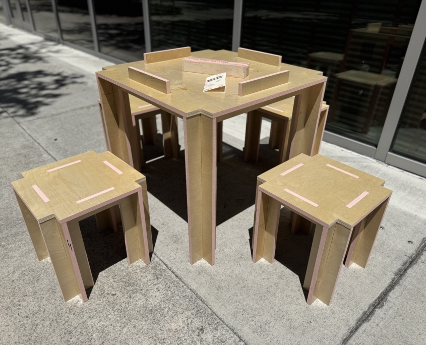
April 2025
Reimagining dominos with cultural phrases for O, Miami Poetry Festival.
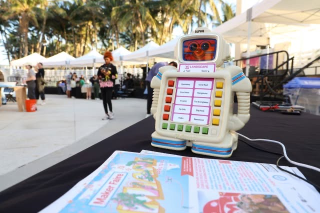
April 2025
Ten years of robotic poetry with O, Miami. From receipt printers to AI-powered vintage robots.
2023
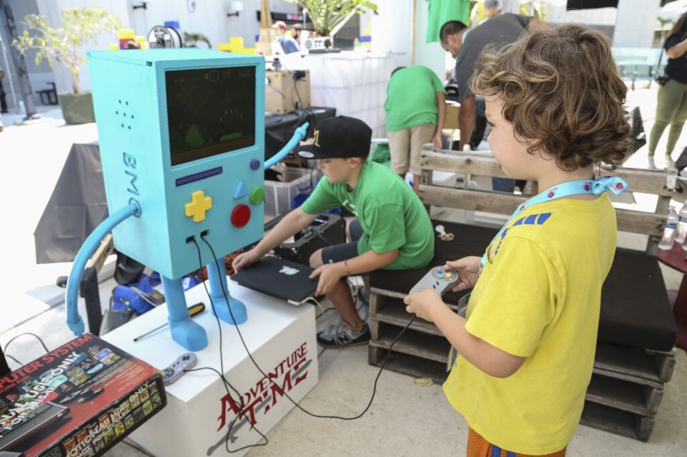
March 2023
Why to come and what to expect at Miami's annual maker gathering.

March 2023
Volunteering as a judge and meeting incredible robotics teams from Panama, Colombia, Ohio, and Florida.
2020

December 2020
Poetry Robots are original machines to disseminate poems through technology.

December 2020
3D printed shells with hidden Bluetooth speakers playing Ocean Vuong poems on Miami Beach.
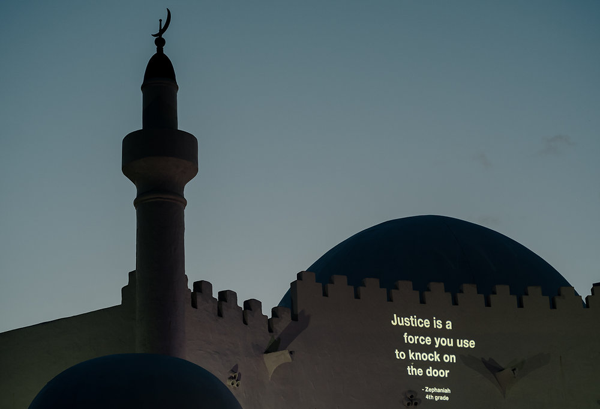
May 2020
Poetry projectors illuminating Opa-Locka streets with poems from local students and residents.
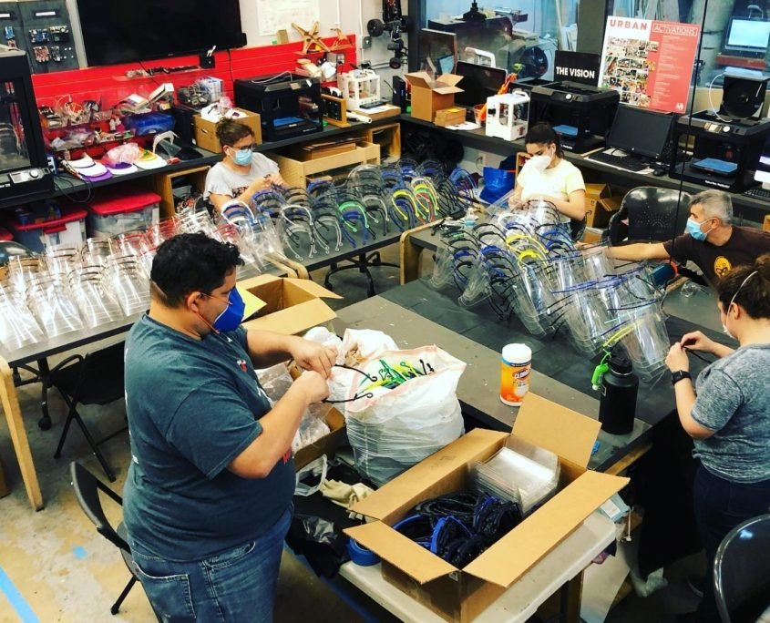
February 2020
How our maker community delivered 18,000+ pieces of free PPE during the pandemic.
2019

May 2019
Join the movement. Let's make Miami a Maker town.
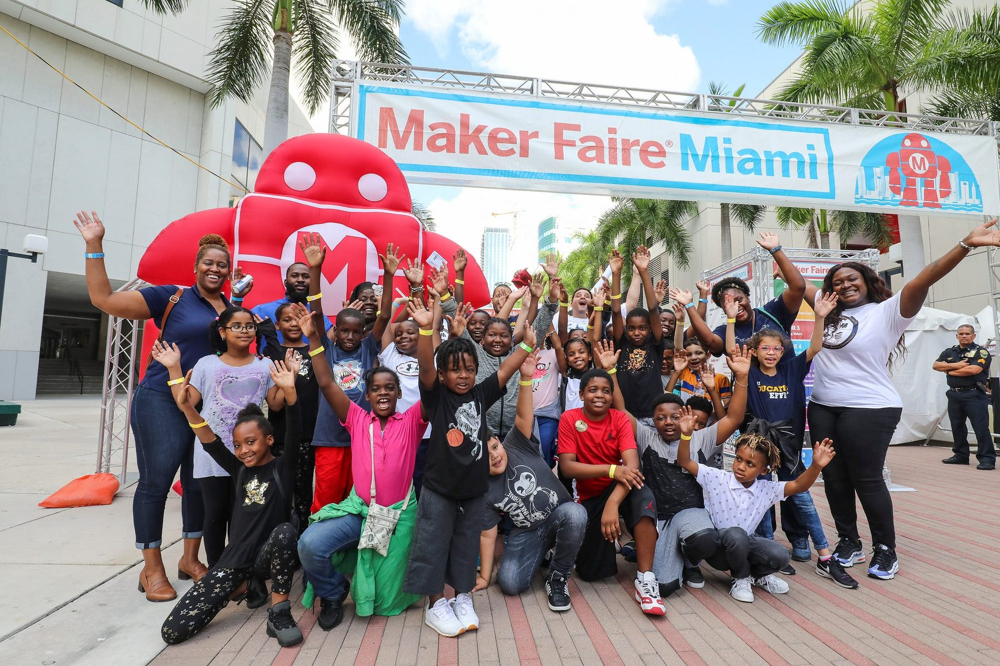
April 2019
Where the future is now, robots reigned and high-tech dresses impressed.
2018

November 2018
Taking on the Producer role at Maker Faire Miami in 2018, and what I hoped to build next.

August 2018
A friendly bot-in-a-box that prints out a keepsake poem with the press of a button.
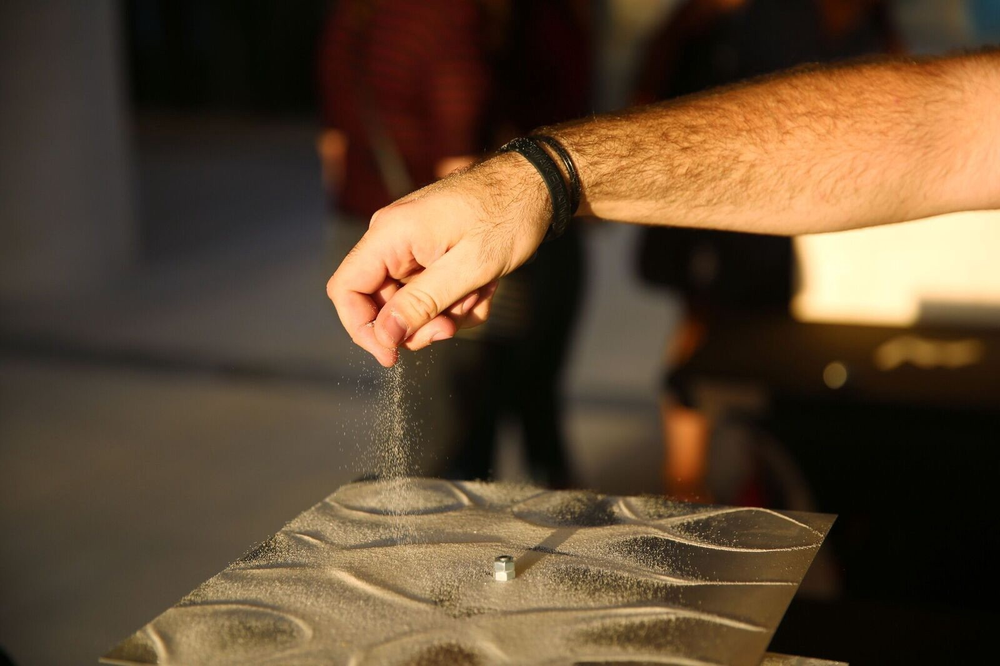
January 2018
Visualizing sound vibrations for the Frost Science Museum LATE event.
2017

July 2017
Collaboration across the pond with Docker Captain Alex Ellis on an IoT project.
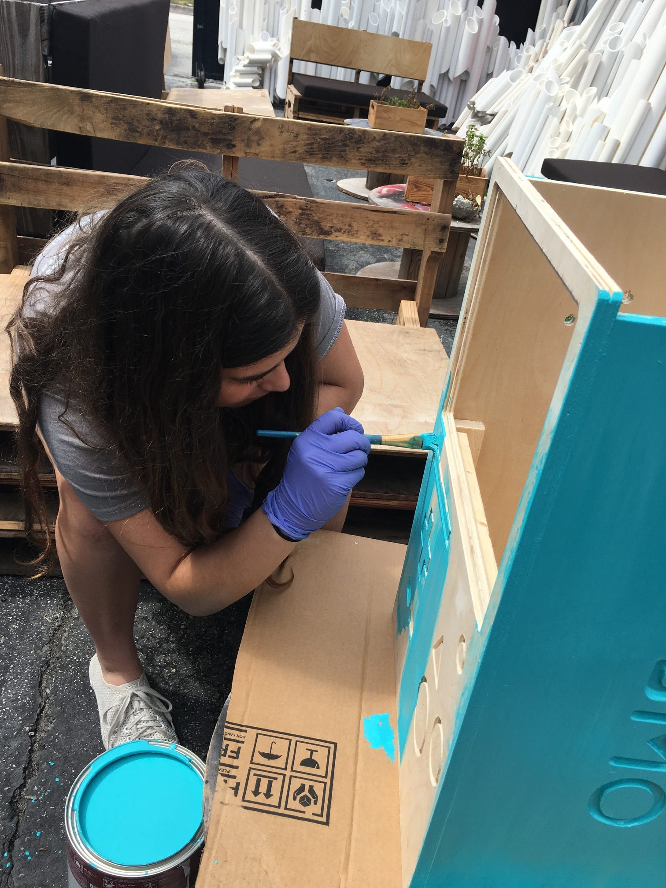
July 2017
Getting the colors right and finishing BMO for Miami Maker Faire.
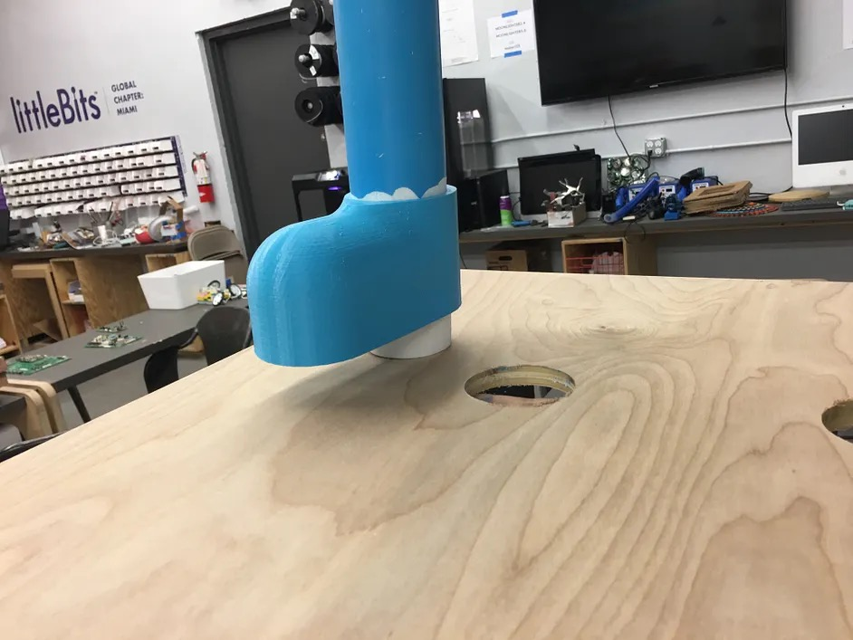
March 2017
Documenting the start of my BMO video game unit build for Miami Maker Faire.